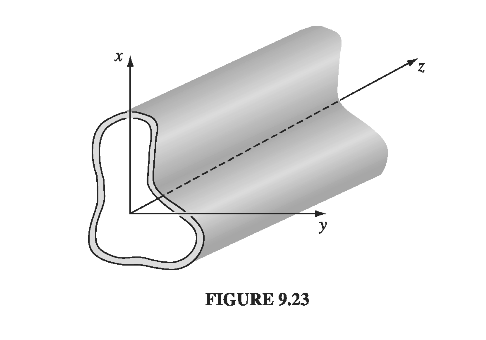

Moving beyond plane waves with infinite extent, now we consider waves confined to the interior to some sort of pipe, or wave guide. To make things simple, the overall geometry of the pipe should be large compared with the wavelength, and we'll assume it's made of a perfect conductor so there's no loss (perfect reflection).

Monochromatic plane wave solutions will look like
E(x,y,z,t)=E0(x,y)ei(kz−ωt)
B(x,y,z,t)=B0(x,y)ei(kz−ωt)
The (source-free) boundary conditions within the waveguide are
E∥B⊥∇⋅E∇×E∇⋅B∇×B======000−∂t∂B0c21∂t∂E
So it turns out that within a waveguide we aren't necessarily limited to transverse solutions only. We include the longitudinal components of the fields when plugging in the coordinates into our boundary conditions and generic solutions:
E0=Exx^+Eyy^+Ezz^
B0=Bxx^+Byy^+Bzz^
Using the Maxwell equations and boundary conditions, eventually we can get independent expressions for the fields
[∂x2∂2+∂y2∂2+(cω)2−k2]Ez=0
[∂x2∂2+∂y2∂2+(cω)2−k2]Bz=0
For trivial solutions, we can come up with separate classes of solutions: If Ez=0, we call the solutions transverse electric (TE) waves. If Bz=0 they are called transverse magnetic (TM) waves. And if both are zero, we call them TEM waves, but it turns out that TEM waves can't occur in a hollow wave guide, since
Ez=0→∂x∂Ex+∂y∂Ey=0
and
Bz=0→∂x∂Ey−∂y∂Ex=0
imply that E0 can be written as the gradient of a scalar potential that satisfies Laplace's equation. But the boundary condition on E requires that hte surface is an equipotential, so the only available potential is a constant and the field is zero everywhere, so no wave exists at all.
9.5.2 Rectangular Wave Guide
Let's look at a rectangular wave guide with height a and width b. As we saw, there are two chief classes of solutions, TE (Ez=0) and TM (Bz=0). Let's specifically take a look at the TM solutions (the process is very similar for TE waves, except that the boundary conditions are flipped).
TM solutions:
Bz=0 everywhere
[∂x2∂2+∂y2∂2+(cω)2−k2]Ez=0
We've got a relatively simple situation here (really just a 2D Laplacian and constants), so start with the method of separation of variables.
Ez(x,y)=X(x)Y(y)
So plugging in:
Ydx2d2X+Xdy2d2Y+[(ω/x)2−k2]XY=0
Separate out the X and Y terms
X1dx2d2X=−kx2
Y1dy2d2Y=−ky2
where
−kx2−ky2+(ω/c)2−k2=0
We already know the general solutions
X(x)=Asin(kxx)+Bcos(kxx)
The boundary conditions require that Ez=0 at x=0 and at x=a, so
Note that if m=0 or n=0, then Ez becomes zero immediately, so the "bottom-most" term is m=n=1. How do m and n relate to the wavenumber and frequency of the modes? We got our separable wavenumbers from
This is a sort of weird dispersion relation. We get a minimum ω as k→0, since k2<0 would give an attenuated wave which we don't care about, so there is a cutoff frequency
ωcutoff=ωk→0→cπ2(a21+b21)
This means that TM modes can not propagate with frequencies below cπ2(a21+b21).
On the flip-side, what do the group and phase velocities look like?
then the wave number is imaginary, and instead of a traveling wave we have exponentially attenuated fields, so this is our cutoff frequency for TE waves. Given the convention of always associating the first index with the larger dimension (assume a≥b), the lowest frequency for a given wave guide is
ω1,0=cπ/a
Example 9.1
We have a rectangular waveguide of dimensions 1cm by 2cm. (a) What is the lowest mode? Find the cutoff frequency. (b) If the waveguide were filled with lossless plastic with ϵr=2, how would the cutoff frequency change?
What is the lowest allowed mode? We should check the lowest TE and TM modes to find out!
The lowest TM mode is
ωc,TM=cπ2(a21+b21)
and the lowest TE mode is
ω1,0=c2cmπ→fco=4cmc=43×1010cm/s=7.5GHz
It's worth noting that the lowest TM mode will always be higher, since it requires both m≥1 and n≥1, so the lowest frequency will be the TE mode.